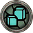
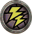
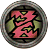
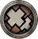
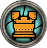
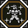

Transcend - unlocked at HR3 - is a customisable time based buff that allows you to augment your hunter's abilities. Similar to Wystones in 4U transcend appears as a usable item with your other consumables, unlike the wystone however the Transcend state starts with little charge and has to be powered up over time on quests.
Transcend settings can be accessed directly from the normal start menu, the settings menu can be opened by selecting Status (狀態) in the menu followed by Secret Ceremony Status (秘儀狀態).
The settings window allows you to manage everything associated with the Transcend state, you can toggle the mode itself off and on as well as upgrade the various buffs that the state grants.
| Icon | Japanese | Chinese | English | Levels | Description |
| 属脈【火】 | 屬脈【火】 | Attribute Pulse (Fire) | 10 | Increases Fire Element damage by a set percentage. | |
| 属脈【水】 | 屬脈【水】 | Attribute Pulse (Water) | 10 | Increases Water Element damage by a set percentage. | |
|  | 属脈【氷】 | 屬脈【冰】 | Attribute Pulse (Ice) | 10 | Increases Ice Element damage by a set percentage. |
|  | 属脈【雷】 | 屬脈【雷】 | Attribute Pulse (Thunder) | 10 | Increases Thunder Element damage by a set percentage. |
|  | 属脈【龍】 | 屬脈【龍】 | Attribute Pulse (Dragon) | 10 | Increases Dragon Element damage by a set percentage. |
|  | 属脈【無】 | 屬脈【無】 | Attribute Pulse (Raw) | 10 | Increases Raw damage by a set percentage. |
| Icon | Level | Melee (Ele / Raw) | Ranged (All) | Points |
|
| 0 | 110% / 101% | 101% | - |
| 1 | 115% / 102% | 102% | 1500 | |
| 2 | 120% / 103% | 103% | 2500 | |
| 3 | 125% / 104% | 104% | 4000 | |
| 4 | 130% / 105% | 105% | 5500 | |
| 5 | 150% / 106% | 106% | 8000 | |
| 6 | 155% / 107% | 107% | 9500 | |
| 7 | 160% / 108% | 108% | 11000 | |
| 8 | 175% / 109% | 109% | 12500 | |
| 9 | 180% / 110% | 110% | 14000 | |
| 10 | 200% / 113% | 113% | 15500 |
| Icon | Japanese | Chinese | English | Levels | Description |
|  | 耐衣 | 耐衣 | Enduring Cloak | 10 | Increases Defense and Elemental Resistances. |
| 専心 | 專心 | Concentration | 10 | Causes the Transcend state to be precharged to a certain percentage. | |
| 鋭気 | 銳氣 | Courage | 10 | Increases the duration of the Transcend state. | |
| 堅陣 | 堅陣 | Stronghold | 1 | Grants Super Armor, disabling knockback. | |
| 健脚 | 健步 | Strider | 1 | Grants Movement Speed Up. | |
| 快癒 | 快癒 | Recovery | 5 | Heals a certain amount of health to all nearby Players and NPCs. |
| Icon / Name | Lv | Effect | Points |
| Enduring Cloak | 0 | Defense: +50, Elemental Resistance: +10 | - |
| 1 | Defense: +100, Elemental Resistance: +20 | 1500 | |
| 2 | Defense: +150, Elemental Resistance: +30 | 2500 | |
| 3 | Defense: +200, Elemental Resistance: +40 | 4000 | |
| 4 | Defense: +250, Elemental Resistance: +50 | 5500 | |
| 5 | Defense: +400, Elemental Resistance: +60 | 8000 | |
| 6 | Defense: +450, Elemental Resistance: +65 | 9500 | |
| 7 | Defense: +500, Elemental Resistance: +70 | 11000 | |
| 8 | Defense: +550, Elemental Resistance: +85 | 12500 | |
| 9 | Defense: +600, Elemental Resistance: +90 | 14000 | |
| 10 | Defense: +800, Elemental Resistance: +100 | 15500 | |
| Icon / Name | Lv | Effect | Points |
| Concentration | 0 | Transcend charging gauge starts at 0%. | - |
| 1 | Transcend charging gauge starts at 4% | 1500 | |
| 2 | Transcend charging gauge starts at 6% | 2500 | |
| 3 | Transcend charging gauge starts at 8% | 4000 | |
| 4 | Transcend charging gauge starts at 10% | 5500 | |
| 5 | Transcend charging gauge starts at 13% | 8000 | |
| 6 | Transcend charging gauge starts at 15% | 9500 | |
| 7 | Transcend charging gauge starts at 17% | 11000 | |
| 8 | Transcend charging gauge starts at 19% | 12500 | |
| 9 | Transcend charging gauge starts at 21% | 14000 | |
| 10 | Transcend charging gauge starts at 25% | 15500 | |
| Icon / Name | Lv | Effect | Points |
| Courage | 0 | Transcend state will last 60 seconds. | 1500 |
| 1 | Transcend state will last 65 seconds. | 1500 | |
| 2 | Transcend state will last 70 seconds. | 2500 | |
| 3 | Transcend state will last 75 seconds. | 4000 | |
| 4 | Transcend state will last 80 seconds. | 5500 | |
| 5 | Transcend state will last 90 seconds. | 8000 | |
| 6 | Transcend state will last 95 seconds. | 9500 | |
| 7 | Transcend state will last 100 seconds. | 11000 | |
| 8 | Transcend state will last 105 seconds. | 12500 | |
| 9 | Transcend state will last 110 seconds. | 14000 | |
| 10 | Transcend state will last 120 seconds. | 15500 | |
| Icon / Name | Lv | Effect | Points |
| Stronghold | 1 | Grants Super Armor. | 10000 |
| Icon / Name | Lv | Effect | Points |
| Strider | 1 | Grants Movement Speed Up. | 10000 |
| Icon / Name | Lv | Effect | Points |
| Recovery | 0 | - | - |
| 1 | Heals a tiny amount of Health to all nearby Players and NPCs. | 2000 | |
| 2 | Heals a small amount of Health to all nearby Players and NPCs. | 3500 | |
| 3 | Heals a medium amount of Health to all nearby Players and NPCs. | 5000 | |
| 4 | Heals a large amount of Health to all nearby Players and NPCs. | 6500 | |
| 5 | Heals a massive amount of Health to all nearby Players and NPCs. | 8000 |
You can earn points to upgrade the various buffs in two ways, you can either use Ancient Hunting Books (Chinese Here) or you can take weapons of the appropriate elemental type onto quests (Fire, Water, Ice, Thunder, Dragon, Raw and Hybrid Elements.)
Ancient Hunting Books are obtained by simply participating in the various cycling events (Conquests, Tower, Festival, Caravan), these give different books based on the type and each book gives varying amounts of points.
| Icon | Japanese | Chinese | English | Events | Points |
| 古猟の儀書 ・ 緋 | 古獵的儀書‧緋 | Ancient Hunting Ceremony Book (Red) Upgrades offensive abilities | All | 500 | |
| 古猟の儀書 ・ 蒼 | 古獵的儀書‧蒼 | Ancient Hunting Ceremony Book (Blue) Upgrades offensive abilities | Sky Corridor, Hunter Festival | 1000 | |
| 古猟の儀書 ・ 暗 | 古獵的儀書‧暗 | Ancient Hunting Ceremony Book (Dark) Upgrades offensive abilities | Hunter Festival | 3000 | |
| 古猟の術書 ・ 緋 | 古獵的術書‧緋 | Ancient Hunting Technique Book (Red) Upgrades defensive abilities | All | 500 | |
 | 古猟の術書 ・ 蒼 | 古獵的術書‧蒼 | Ancient Hunting Technique Book (Blue) Upgrades defensive abilities | Sky Corridor, Hunter Festival | 1000 |
The books are rewarded upon hitting certain milestones while participating in these events, for example you may get 3 Books for clearing 20 floors in the Tower.

After entering a quest with Transcend active you will simply have a new item icon, this is visually the image of a hunter and starts out light grey. As times goes on the light grey area will recede downwards and the icon will be replaced with the image of a yellow hunter on a flashing white background, this indicates it is ready to be used. This flashing will always be visible behind all items, even if you have something other than the transcend option selected.
Using the 'item' will cause you to enter the transcend state, this is indicated by a special animation which results in your character gaining an aura. While this aura is active you will gain the effects of any abilities you have activated and attacking with weapons will cause new hit animations depending on element used.
After enough hits have been landed a sound will play and the icon will change again to that of a carving knife, this indicates that you can utilise an 'Elemental Burst'. Upon using this your character will rush forward with the carving knife and upon hitting the enemy, trigger the elemental burst that is appropriate to the element of weapon used and the monster hit. Weapons with a combination element will either choose an effect based on which the monster was most damaged by or ar random. If a monster is immune to the elemental damage dealt to it the burst will default to Raw.
The effects of the various bursts are listed below.
Elemental Bursts are able to be used on monsters after they have taken enough hits with transcend active, the item icon for the Transcend state will become a knife and allow you to trigger one of the following bursts depending on the element of your currently wielded weapon.
| Icon | Chinese | English | Elemental Burst Effects |
| 屬脈【火】 | Attribute Pulse (Fire) | Deals fire element damage, flame bursts can force most monsters to stagger. | |
| 屬脈【水】 | Attribute Pulse (Water) | Deals low water element damage and softens hitzones on monsters. Has a very long duration. | |
| 屬脈【冰】 | Attribute Pulse (Ice) | Freezes a monster solid, restricting all movement for a time period. Tails cannot be cut during this state and some monsters may be resistant to freezing even if they take ice damage. | |
| 屬脈【雷】 | Attribute Pulse (Thunder) | Deals thunder element damage and paralyzes monsters. Does not work on monsters that can't be paralysed. | |
| 屬脈【龍】 | Attribute Pulse (Dragon) | Deals dragon element and stun damage, can KO monsters. | |
| 屬脈【無】 | Attribute Pulse (Raw) | Deals large amounts of raw damage and causes a Flash Bomb effect. |
The burst will be forced to raw if the monster takes no damage from the element used. Hybrid elements such as Light have a hierarchy for the chosen elements. For example Shantien weapons deal 30% Fire, 100% Water and 70% Thunder but will always choose Fire as the burst type if fire damage has been dealt.
Status effects will only occur if the monster can be afflicted by it normally and if you use the burst during frames in which a monster is staggerable. For example performing an Ice element burst during an uninterruptible attack animation will not freeze the monster, likewise using a Thunder element burst on a monster that can't be paralysed won't paralyse the monster.